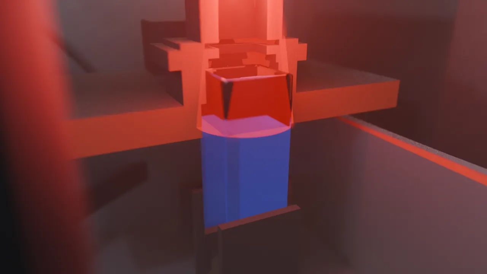

01 / 10
Die Messbox
Eine Dunkelkammer aus dem 3D-Drucker, innen 19 × 13,5 × 14 cm. Schwarzes PLA mit 3 mm Wandstärke – dünneres lässt rotes Licht durch.
28 Druckteile · Messbox v4.1

Test · Rundgang in zehn Stationen
Ein Flug durch unser Messgerät – vom Deckel bis ins Methylenblau-Molekül und wieder hinaus. Gerendert in Blender aus unseren 28 echten Druckdateien. Scrolle, um hineinzufliegen.
Bilder werden geladen …
01 / 10
Eine Dunkelkammer aus dem 3D-Drucker, innen 19 × 13,5 × 14 cm. Schwarzes PLA mit 3 mm Wandstärke – dünneres lässt rotes Licht durch.
28 Druckteile · Messbox v4.1
02 / 10
Die einzige Öffnung im Deckel, 66 × 66 mm. Hier tauschen wir die LED-Module – und später schaut hier eine Wärmebildkamera hinein.
Licht kommt nur herein, wenn wir es wollen
03 / 10
Die LED sitzt auf einem Alu-Stern und strahlt durch eine 9 × 9 mm große Blende senkrecht nach unten. Der Kühlkörper führt die Wärme ab – er bestimmt sogar die Höhe der Kammer.
660 nm · 3 W · 350 mA Konstantstrom
04 / 10
3,5 mL Methylenblau-Lösung, 1 cm Schichtdicke. Bei 660 nm schluckt der Farbstoff 97 % so viel Licht wie in seinem Maximum bei 664 nm.
Rot trifft fast genau das Absorptionsmaximum
05 / 10
Ein Lichtteilchen regt ein Methylenblau-Molekül an. Es gibt die Energie an Sauerstoff weiter – reaktiver Singulett-Sauerstoff ¹O₂ entsteht. Der greift andere Farbstoffmoleküle an: Sie verlieren ihre Farbe, die Lösung bleicht aus.
Molekül aus PubChem-Koordinaten (CID 4139)
06 / 10
Alle 15 Sekunden: 11 s Licht, 4 s Dunkelheit. Gemessen wird nur in der Dunkelpause – sonst würde der Sensor das LED-Licht mitmessen.
11 s an · 4 s aus
07 / 10
Quer zur LED schickt das Spektrometer weißes Licht durch die Probe. Ein Gitter fächert es in seine Farben auf, ein Zeilensensor misst jede Farbe einzeln. Wo Methylenblau schluckt, fehlt Licht – kommt mehr durch, ist die Probe ausgebleicht.
90° zur LED · Innenleben vereinfacht dargestellt
08 / 10
Daneben steht eine Zwillingsküvette, die nie Licht abbekommt. Ein Fühler misst ihre Temperatur auf ±0,2 °C, der BME280 die Kammerluft. Ändert sich nur die bestrahlte Probe, war es das Licht.
Chemische Dunkelkontrolle
09 / 10
Sie sitzt außerhalb der Kammer – der ESP32 hat eine dauerleuchtende LED, und in einer Dunkelkammer ist jede LED Störlicht. Über einen MOSFET schaltet er die LED im 15-Sekunden-Takt.
ESP32 · LDD-350L · IRLZ44N
10 / 10
In der Schublade warten die anderen LED-Module: 590, 450 und 480 nm. Ein einziger Treiber versorgt alle vier – so fällt seine Toleranz als Fehlerquelle weg. Aus vier gemessenen Bleichraten soll unser Modell die fünfte Farbe vorhersagen.
450 · 480 · 590 · 660 nm
Weiter
Den Rundgang hat Blender gerendert – 500 Einzelbilder aus unserem 3D-Modell, keine Fotos. Im interaktiven 3D-Modell kannst du die Box selbst drehen.
3D-Modell: Messbox v4.1 aus unseren Druckdateien · gerendert mit Blender (EEVEE) · Licht und Holz: Poly Haven (CC0) · Methylenblau-Koordinaten: PubChem CID 4139 · Spektrometer-Innenleben vereinfacht.